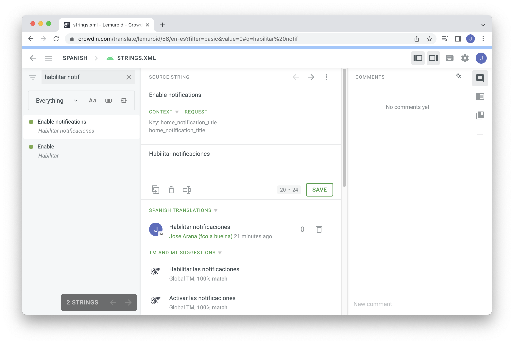

Week 12: Open Source Part 1
(July 3 - July 10) Introduction to Open Source Software
When we were told we had to find an open source project to contribute to I had a few candidates in mind, I'm a fan of open source software, but until now only as a user, I remember using Audacity for mixing music tracks together for a Mother's day presentation in middle school, using GIMP and Krita as free Photoshop alternatives with mixed success, the LibreOffice suite, Blender for 3d modeling and rendering, the list goes on and on.
But all the open source software mentioned is pretty mature and is unlikely to have any low hanging fruit for someone new to the project. I instead looked at another project that I use pretty often: Lemuroid is an Android app for playing retro games, all the way from the NES to the Nintendo 64, being that I've used it for a while I had noticed some issues with the spanish translation.

However it turned out Lemuroid has a separate repository in Crowdin for its translation files, and what translation goes in the next release is decided through comunity votes. I did a few translations but I'd have to look somewhere else for my first pull request.
I ended up doing my very first contribution to the "first-contributions" repo which is pretty much a hands-on tutorial to learn how to make pull requests. From there I moved to the recomended projects list, landing on the Google Chrome repositories.
I found an issue in the developer.chrome.com tracker and set out to fix it, then I did the corresponding pull request. I submitted it for approval, but I'm not sure if it'll even be considered, I followed the guidelines to the letter but the notifications under the PR seem to suggest that I need to be whitelisted by the maintainers in some way.

Without doing more pull requests it's hard to know since I don't have a frame of reference. I've already started looking at other issues for next week in order to fix that.
Overall I think the main benefit of contributing to open source software so far has been looking at the variation in project structure. Some of the repositories that I visited were a challenge to navigate through. Untangling the logic of each project seems like just as big of a challenge as the issues themselves.
Uploaded on July 3, 2023